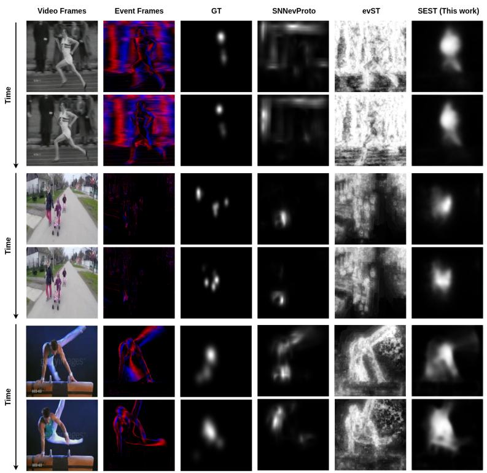

Event-camera SSL transfer · 扫读 · 2026-05-25
SEST：自监督 event Swin backbone 可以迁移到标注稀缺的事件相机 saliency prediction。
模态较专，适合作为自监督 backbone 迁移到异构视觉模态的扫读案例。
编号2605.23790
优先级扫读
类别Event-camera SSL transfer
会议arXiv
方法提出 SEST，用 self-supervised pretrained event-based Swin Transformer 作为 backbone，接轻量 CNN decoder 预测动态 saliency maps，并用由 RGB saliency benchmark 生成的 N-DHF1K / N-UCF Sports 扩充 event saliency 数据。
来源arXiv / OpenReview
先说结论。自监督 event Swin backbone 可以迁移到标注稀缺的事件相机 saliency prediction。 模态较专，适合作为自监督 backbone 迁移到异构视觉模态的扫读案例。


核心问题
适合作为“自监督 backbone 如何迁移到稀缺/异构视觉模态”的扫读案例，不建议排在 TextTeacher/MDM/EvoVid 前面。
方法拆解
提出 SEST，用 self-supervised pretrained event-based Swin Transformer 作为 backbone，接轻量 CNN decoder 预测动态 saliency maps，并用由 RGB saliency benchmark 生成的 N-DHF1K / N-UCF Sports 扩充 event saliency 数据。
主要贡献
把 event-native 自监督预训练带入事件相机 saliency prediction，在标注稀缺模态下验证自监督 backbone 的迁移收益。
实验看点
摘要报告 SEST 明显优于现有 event-based saliency 方法，并在真实 event camera 数据上有 zero-shot 可迁移性。
局限与读法
event camera 属于专用感知模态，和通用 RGB 图像表征仍有距离；主任务是 saliency prediction 而非通用 SSL benchmark。